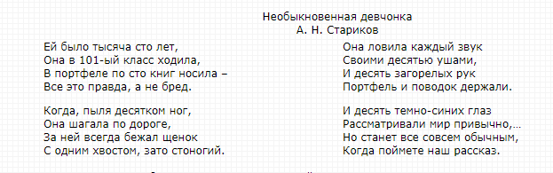

КОДИРОВАНИЕ ИНФОРМАЦИИ
- Прочитайте теоритические сведенья.
Решите задачи:
-
Системы счисления
Задачи
1. Числа в двоичной системе счисления имеют вид 11(2) и 101(2) . Чему равно их произведение в десятичном виде? Варианты: 60, 15, 1111, 8.
2. Чему равна разность 25 - &1101. Варианты: &1100, 13.
3. В десятичной - 8;
•в двоичной - [ ];
•в восьмеричной - [ ];
•в шестнадцатеричной - [ ].
4. Количество чисел, которое можно закодировать нулями и единицами в 10 позициях, равно: 128, 256, 1024, 2048?
5. Укажите истинное высказывание:
•#a < &1100;
•#a > &1100;
•#a = &1100.
6. Дано равенство 23(k)+33(k)=122(k). Чему равно k? Варианты: 2, 3, 4, 10.
7. Какое число предшествует шестнадцатеричному числу #6afa? Варианты: #6afb, #6a10, #6af9, #5afa.
8. Шестнадцатеричное число #4d в десятичной системе счисления это: 43, 77, 177, 176?
9. Прочитайте стихотворение. Переведите встречающиеся в нем числительные из двоичной системы счисления в десятичную. 
10. За праздничным столом собрались 4 поколения одной семьи: дед, отец, сын и внук. Их возраст в различных системах счисления записывается так 88 лет, 66 лет, 44 года и 11 лет. Сколько им лет в десятичной системе счисления, если через год их возраст в тех системах счисления можно будет записать как 100?
-
Кодирование символов.
Байт.
Задачи
1. В кодируемом английском тексте используется только 26 букв латинского алфавита и еще 6 знаков пунктуации. В этом случае текст, содержащий 1000 символов можно гарантированно сжать без потерь информации до размера:
•8000 бит;
•7000 бит;
•5000 бит;
•1000 бит.
2. Словарь Эллочки – «людоедки» (персонаж романа «Двенадцать стульев») составляет 30 слов.
Сколько бит достаточно, чтобы закодировать весь словарный запас Эллочки?
Варианты: 8, 5, 3, 1.
-
Принципы уменьшения объема графических файлов
Задачи
1. Определите, каким цветам из набора:красный, зеленый, синий, белый, черный, соответствуют следующие десятичные коды в системе RGB:
• 0,255,0;
• 255,255,255;
• 0,0,0;
• 0,0,255;
• 255,0,0.
2. Какой цвет в системе RGB представляется следующим шестнадцатеричным кодом: #ffff00?
• Cyan;
• Magenta;
• Yellow;
• Black.
3. В режиме True Color на хранение кода каждого пикселя отводится:
• 16 бит;
• 16 байт;
• 24 бита.
4. Минимальной единицей измерения графического изображения на экране монитора является:
• mm;
• sm;
• pixel;
• inch.
5. Растровый графический файл содержит черно-белое изображение (без градаций серого) размером 100х100 точек. Какой объем памяти требуется для хранения этого файла?
• 1000 бит;
• 10000 бит;
• 10000 байт.
6. Растровый файл, содержащий черно-белый (без оттенков серого) квадратный рисунок, имеет объем 200 байт. Рассчитайте размер стороны квадрата (в пикселях).
• 15;
• 40;
• 1000.
7. Объем изображения, размером 40х50 пикселей, составляет 2000 байт. Изображение использует:
• 8 цветов;
• 256 цветов;
• 16777216 цветов.
8. Известно, что видеопамять компьютера имеет объем 512 Кбайт. Разрешающая способность экрана 640 на 200 пикселей. Сколько страниц экрана одновременно разместится в видеопамяти при палитре:
• из 8 цветов;
• 16 цветов;
• 256 цветов?
- Цифро-аналоговое и аналого-цифровое
преобразование звуковой информации
Задачи
1. Подсчитать, сколько места будет занимать одна минута цифрового звука на жестком диске или любом другом цифровом носителе, записанного с частотой
а) 44.1 кГц;
б) 11 кГц;
в) 22 кГц;
г) 32 кГц
и разрядностью 16 бит.
Решение.
а) Если записывают моносигнал с частотой 44.1 кГц, разрядностью 16 бит (2 байта), то каждую минуту аналого-цифровой преобразователь будет выдавать 441000 * 2 * 60 = 529 000 байт (около 5 Мб) данных об амплитуде аналогового сигнала, который в компьютере записываются на жесткий диск.
Если записывают стереосигнал, то 1 058 000 байт (около 10 Мб)
.
б) для частот 11, 22, 32 кГц расчеты производятся аналогично.
2. Какой объем данных имеет моноаудиофайл, длительность звучания которого 1 секунда, при среднем качестве звука (16 бит, 24 кГц)?
Решение.
16 бит * 24000 = 384 000 бит = 48 000 байт = 46 875 килобайт.
3. Рассчитайте объем стереоаудиофайла длительностью 20 секунд при 20-битном кодировании и частоте дискредитации 44.1 кГц. Варианты: 44,1 Mb, 4.21 Mb, 3,53 Mb.
4. Определите количество уровней звукового сигнала при использовании 8-битных звуковых карт. Варианты: 256, 512,1024, 65 536.
5. Приведите пример:
а) аналогового способа представления звуковой информации;
б) дискретного способа представления звуковой информации.
6. Перечислите параметры, от которых зависит качество двоичного кодирования звука.
|